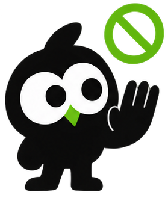

Stay on the task.
StayT blocks the apps and sites that pull you away while you work, then turns the focus time you keep into a streak.
GET IT ON GOOGLE PLAY PRIVACY POLICYPackage: com.nitridee.staytapp
How it works
1. Pick a task
Study, deep work, a workout. Choose the apps and sites that distract you from it.

2. Distractions bounce
Open a blocked app and StayT covers it and sends you back to your task.
3. Build the streak
Every focused day grows your streak and earns milestone badges.
What's inside
App and website blocking
Block apps, split-screen and pop-up windows, and websites in your browser.
Schedules
Block automatically during your focus hours, with ready-made presets.
Feed Shield
Keep an app but hide its Reels, Explore and other endless feeds.
Daily budgets
Limit opens or minutes per app, so a quick check stays quick.
Dumbphone mode
Flip to an allowlist: only the apps you choose stay usable.
Stats and history
Focus time, resisted attempts, streaks and a calendar of your sessions.
Also
- Home-screen widget and a Quick Settings tile to start a session fast
- Light and pure-black dark mode
- No account, no sign-up
Privacy. Your tasks, sessions and history never leave your phone. StayT uses Android's Accessibility Service only to see which app or site is in front so it can block it, and never stores or sends that. Ads come from Google AdMob. Details in the privacy policy.
Support
Questions, feedback, or data requests: samridhashrestha@gmail.com